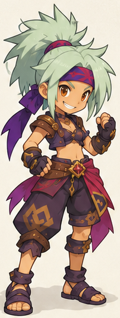
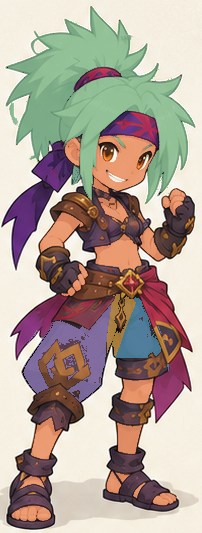
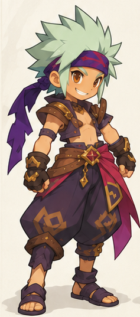
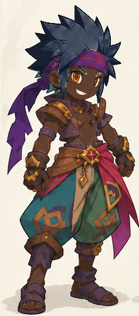
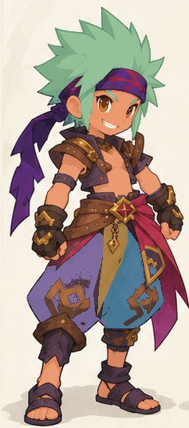

Catalogue de préparation Un même procédé pour personnages et monstres. Ces preuves techniques n’accordent aucune validation esthétique. Les brouillons ne sont pas activés dans l’atelier.
Ryuu · Féminine character · feminine · pilot · 5 zones
Original 
Couleurs de contrôle Zones 
skin : 8480 px · hair : 16214 px · clothing1 : 3083 px · clothing2 : 1479 px · clothing3 : 732 px
Pas de protection globale tracée ; vérifier les exclusions et les équipements.
Ryuu · Masculine character · masculine · pilot · 5 zones
Original 
Couleurs de contrôle 
Zones 
skin : 8565 px · hair : 10653 px · clothing1 : 4630 px · clothing2 : 4214 px · clothing3 : 1856 px
Pas de protection globale tracée ; vérifier les exclusions et les équipements.
Préparer une créature · Manifeste des empreintes